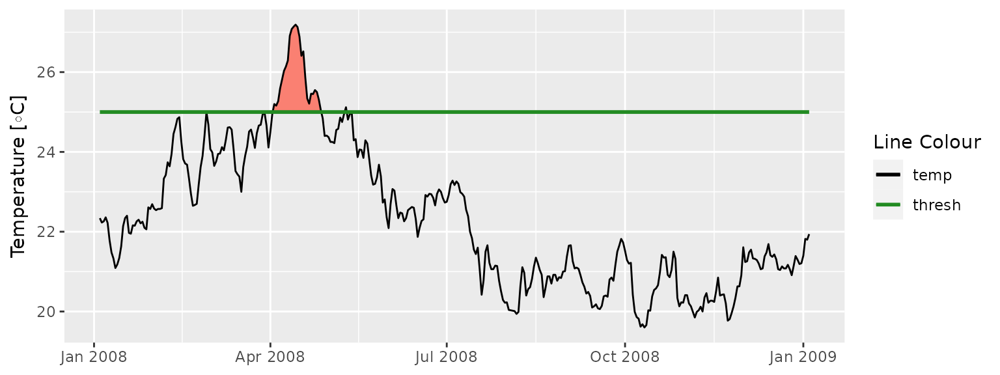
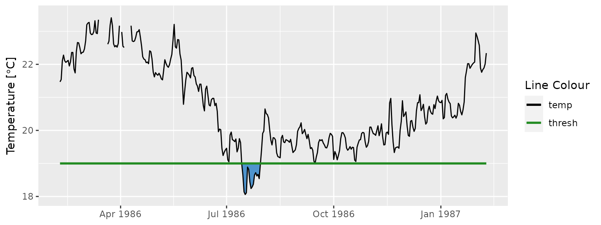

vignettes/exceedance.Rmd
exceedance.RmdIn addition to the calculation of events based on a given percentile, this package also allows for the calculation of events based on a given static threshold with the exceedance() function. This is most useful if one is more interested in testing a time series for events that exceed a pre-determined static threshold that is already known to be of particular significance in a given part of the world. The output of this function may also be used in the calculation of events that may require two thresholds, such as atmospheric events with ‘tMin’ and ‘tMax’ daily values. For a detailed explanation for how to do this please see this vignette. The data requirements for exceedance() are the same as for ts2clm() and detect_event().
The calculation of exceedances may be done with only one function as seen here:
# Activate libraries
library(dplyr)
library(ggplot2)
library(heatwaveR)
# Calculate exceedence
exc_25 <- exceedance(sst_WA, threshold = 25)
# Look at a few metrics
exc_25$exceedance %>%
ungroup() %>%
select(exceedance_no, duration, date_start, date_peak, intensity_max, intensity_cumulative) %>%
dplyr::arrange(-intensity_cumulative) %>%
head(5)## # A tibble: 5 x 6
## exceedance_no duration date_start date_peak intensity_max intensity_cumulati…
## <dbl> <dbl> <date> <date> <dbl> <dbl>
## 1 7 52 2011-02-08 2011-02-28 4.74 87.0
## 2 6 25 2008-04-03 2008-04-14 2.19 24.5
## 3 10 41 2012-03-03 2012-04-10 1.37 18.0
## 4 2 17 1999-05-13 1999-05-22 1.4 14.6
## 5 5 10 2000-05-03 2000-05-04 1.01 6.97Note that the resultant output of exceedance() is very similar to detect_event(), except that the two dataframes within the list are called threshold and exceedance, rather than climatology and event.
Because event_line() and lolli_plot() are designed to work on the output of detect_event(), if we want to visualise the results of exceedance() we will need to do so ‘by hand’ with ggplot2. The code below works as an example of how to do so:
exc_25_thresh <- exc_25$threshold %>%
slice(9500:9866)
ggplot(data = exc_25_thresh, aes(x = t)) +
geom_flame(aes(y = temp, y2 = thresh, fill = "all"), show.legend = F) +
geom_line(aes(y = temp, colour = "temp")) +
geom_line(aes(y = thresh, colour = "thresh"), size = 1.0) +
scale_colour_manual(name = "Line Colour",
values = c("temp" = "black", "thresh" = "forestgreen")) +
scale_fill_manual(name = "Event Colour", values = c("all" = "salmon")) +
guides(colour = guide_legend(override.aes = list(fill = NA))) +
scale_x_date(date_labels = "%b %Y") +
labs(y = expression(paste("Temperature [", degree, "C]")), x = NULL)
Unfortunately there is no antonym for exceedance in the English language, which makes talking about exceedances below a static threshold somewhat awkward. For the purposes of clarity here we will refer to these as negative exceedances.
The exceedance() function may be used to calculate consecutive days below a threshold as seen here:
exc_19 <- exceedance(sst_WA, threshold = 19, below = TRUE)
exc_19$exceedance %>%
dplyr::ungroup() %>%
dplyr::select(exceedance_no, duration, date_start, date_peak, intensity_mean, intensity_cumulative) %>%
dplyr::arrange(intensity_cumulative) %>%
head(5)## # A tibble: 5 x 6
## exceedance_no duration date_start date_peak intensity_mean intensity_cumulat…
## <dbl> <dbl> <date> <date> <dbl> <dbl>
## 1 31 72 2018-07-30 2018-09-18 -1.04 -75.1
## 2 29 64 2017-08-09 2017-08-20 -0.775 -49.6
## 3 16 30 2002-09-09 2002-09-25 -0.876 -26.3
## 4 17 34 2003-09-06 2003-09-16 -0.753 -25.6
## 5 13 24 1997-09-03 1997-09-15 -0.769 -18.5Were one to desire a visualisation of these data it could be produced with the following code:
exc_19_thresh <- exc_19$threshold %>%
slice(1500:1866)
ggplot(data = exc_19_thresh, aes(x = t)) +
geom_flame(aes(y = thresh, y2 = temp), fill = "steelblue3", show.legend = F) +
geom_line(aes(y = temp, colour = "temp")) +
geom_line(aes(y = thresh, colour = "thresh"), size = 1.0) +
scale_colour_manual(name = "Line Colour",
values = c("temp" = "black", "thresh" = "forestgreen")) +
scale_y_continuous(limits = c(18, 23.5)) +
scale_x_date(date_labels = "%b %Y") +
labs(y = expression(paste("Temperature [", degree, "C]")), x = NULL)